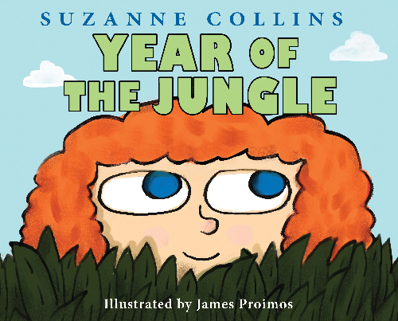
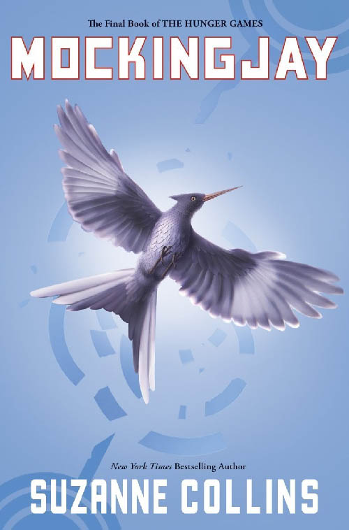
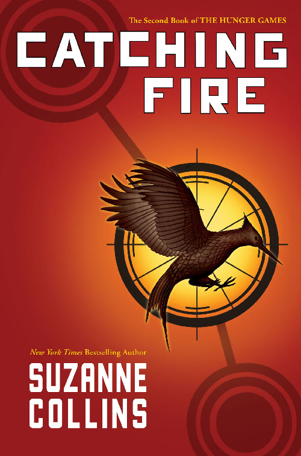
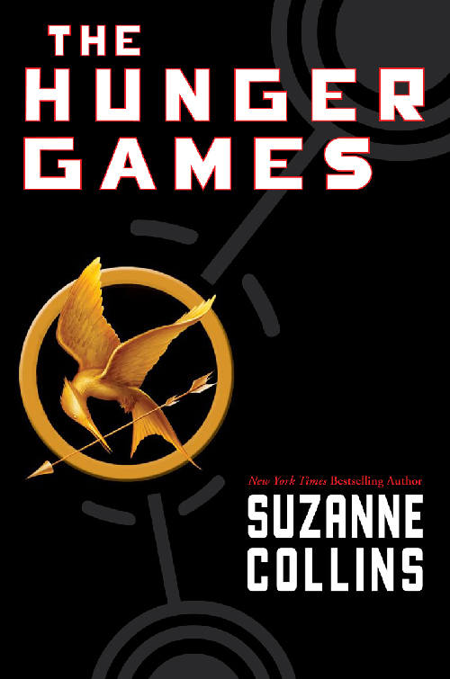
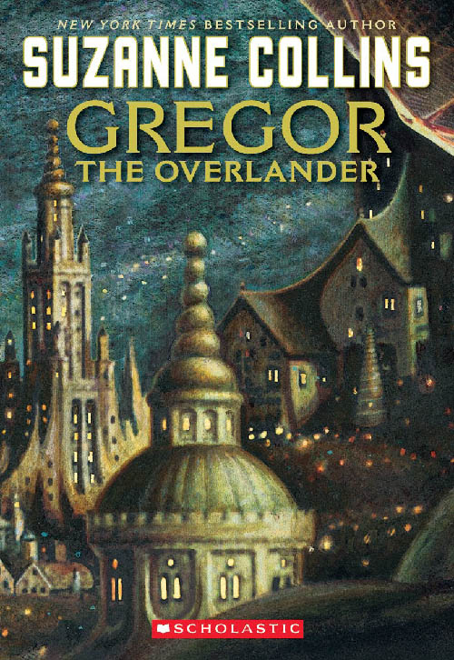
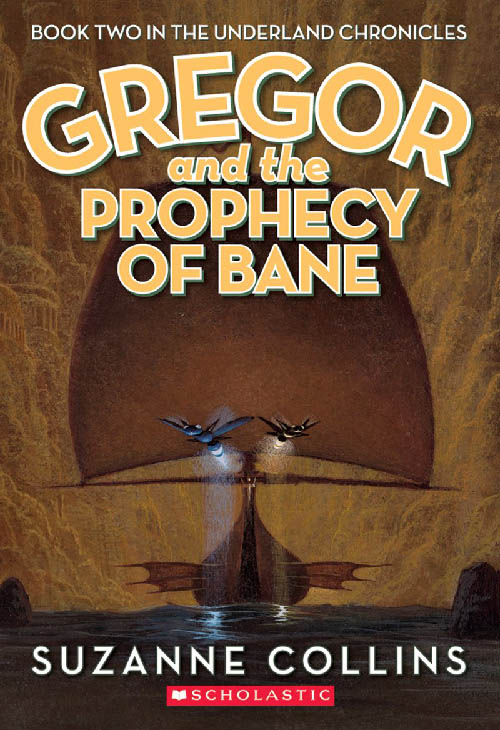
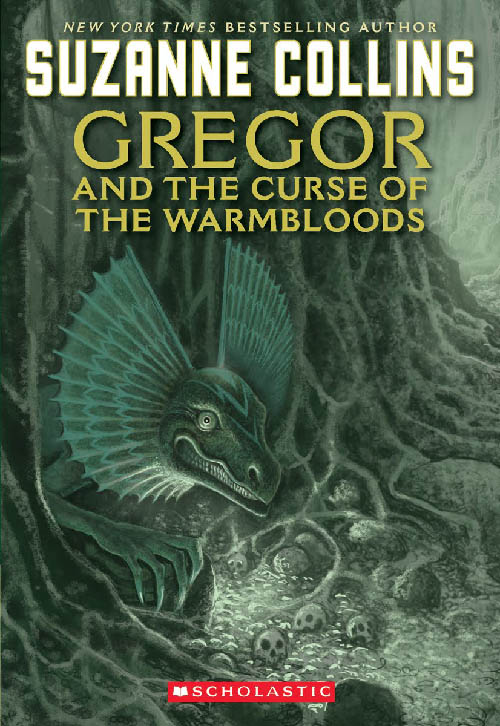
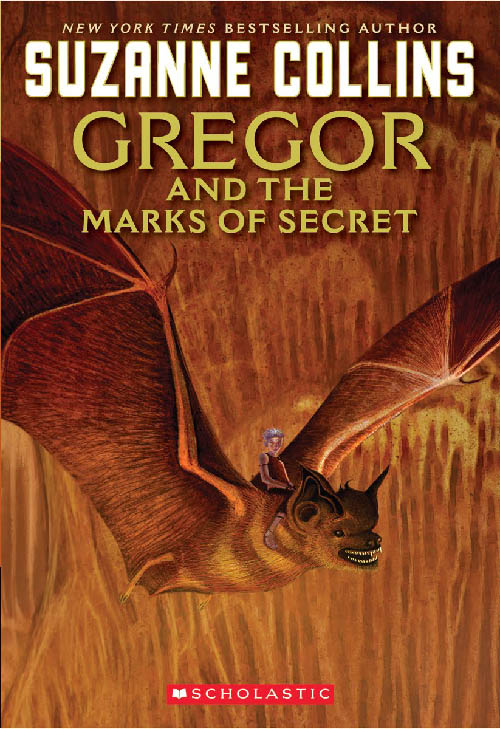
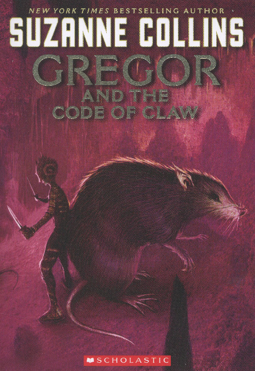
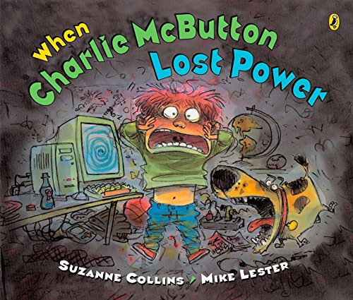

Year of the Jungle

When Suzy's father is called to war in a faraway jungle, she struggles to deal with his absence. (Scholastic Press, 2013)
More about the book >
Featured Review
“In this picture book, Collins sensitively examines the impact of war on the very young, using her own family history as a template."
--Publishers Weekly, STARRED REVIEW
Mockingjay

Katniss Everdeen, girl on fire, has survived, even though her home has been destroyed. There are rebels. There are new leaders. A revolution is unfolding. (Scholastic Press, 2010)
More about the book >
Featured Review
“This concluding volume in Collins's Hunger Games trilogy accomplishes a rare feat, the last installment being the best yet, a beautifully orchestrated and intelligent novel that succeeds on every level."
--Publishers Weekly, STARRED REVIEW
Catching Fire

Much to her shock, Katniss has fueled an unrest she's afraid she cannot stop. And what scares her more is that she's not entirely convinced she should try. As time draws near for Katniss and Peeta to visit the districts on the Capitol's cruel Victory Tour, the stakes are higher than ever. If they can't prove, without a shadow of a doubt, that they are lost in their love for each other, the consequences will be horrifying. (Scholastic Press, 2009)
More about the book >
Featured Review
“Whereas Katniss kills with finesse, Collins writes with raw power...The Hunger Games and Catching Fire expose children to exactly the kind of violence we usually shield them from. But that just goes to show how much adults forget about what it's like to be a child. Kids are physical creatures, and they're not stupid. They know all about violence and power and raw emotions. What's really scary is when adults pretend that such things don't exist."
--Time Magazine
The Hunger Games

Katniss is a 16-year-old girl living with her mother and younger sister in the poorest district of Panem, the remains of what used be North America. Long ago the districts waged war on the Capitol and were defeated. As part of the surrender terms, each district agreed to send one boy and one girl to appear in an annual televised event called, "The Hunger Games." The terrain, rules, and level of audience participation may change but one thing is constant: kill or be killed. When her sister is chosen by lottery, Katniss steps up to go in her place. (Scholastic Press, 2008)
More about the book >
Featured Review
"[The Hunger Games] is a violent, jarring, speed-rap of a novel that generates nearly constant suspense...I couldn't stop reading."
--Stephen King, Entertainment Weekly Review
Gregor the Overlander

Meet Gregor, a kid from New York City, who falls out of his laundry room into a fantastical subterranean world called the Underland. Accompanied by his toddler sister, Boots, he encounters giant talking creatures-- cockroaches, bats, spiders and rats--and an unusual society of humans. And they’re all expecting him... (Scholastic Press, 2003)
More about the book >
Featured Review
"Gregor’s luminous, supremely absorbing quest takes place in a strange underground land of giant cockroaches, rideable bats, and violet-eyed humans... Creature depictions are soulful and the plot is riveting... Wonderful.”
--Kirkus Reviews, STARRED REVIEW
Gregor and the Prophecy of Bane

When giant roaches kidnap Boots and spirit her back to the Underland, Gregor follows to retrieve her. Soon he discovers that they are both implicated in “The Prophecy of Bane,” which warns of the dangers of a terrifying white rat. Guess whose job it is to destroy it? (Scholastic Press, 2004)
More about the book >
Featured Review
"Collins crafts another edge-of-the-seat quest... Gregor’s resolution of the prophecy will surprise and delight readers--who will be equally delighted to see a new prophecy in Gregor’s luggage when he returns home. Yessss!”
--Kirkus Reviews
Gregor and the Curse of the Warmbloods

Gregor and Boots must return to the Underland to help find a cure for a deadly plague called the Curse of the Warmbloods. Gregor is desperate to succeed because, along with several of his Underland friends, a member of his own family is stricken. (Scholastic Press, 2005)
More about the book >
Featured Review
"This immensely readable installment won’t disappoint fans of the first two books... Character development, plotting, pacing, and description all shine; suspenseful chapter endings propel the story forward to its shocking and sobering conclusion.”
--The Horn Book Magazine
Gregor and the Marks of the Secret

Gregor sets out to solve a mystery involving the Underland mice and ends up discovering a terrible secret. This book leads right into the fifth and final book of the series, "Gregor and the Code of Claw." (Scholastic Press, 2006)
More about the book >
Featured Review
"In this penultimate volume in "The Underland Chronicles," Collins begins to gather herself for the grand finale...The cliffhanger ending will leave readers gasping as Gregor goes chasing another prophecy, the direst yet.)."
--Kirkus Reviews, STARRED REVIEW
Gregor and the Code of Claw

Everyone in the Underland has been taking great pains to keep The Prophecy of Time from Gregor. Gregor knows it must say something awful but he never imagined just how awful: It calls for the warrior's death. Now, with an army of rats approaching, and his mom and sister still in Regalia, Gregor the warrior must gather up his courage to help defend Regalia and get his family home safely. The entire existence of the Underland is in Gregor's hands, and time is running out. There is a code to be cracked, a mysterious new princess, Gregor's burgeoning dark side, and a war to end all wars. (Scholastic Press, 2007)
More about the book >
Featured Review
"Perhaps Collins’s greatest achievement in these tales is the effortless introduction of weighty geopolitical ethics into rip-roaring adventure. It seems as elusive in the Underland as up above, but Gregor and his companions, including the unforgettable rat Ripred, may yet find a way. The resolution is bittersweet but faintly hopeful—a fitting end for an unflinchingly gutsy series whose deftly drawn characters have always lived dangerously."
--Kirkus Reviews
When Charlie McButton Lost Power

When a thunderstorm knocks out the electricity, Charlie McButton's whole tech empire comes tumbling down. He needs batteries–FAST. But the only batteries are inside his baby sister's beloved talking doll. Will he resort to desperate measures, and cause his sister to have a meltdown of her own? Or will he snap out of his computer craze long enough to realize sisters can be fun, even without batteries? (Penguin Group, 2005)
More about the book >
Featured Review
"A clever, humorous story in rhyme. Charlie's techno-driven world comes to a crashing halt when a thunderstorm causes a power outage. His mother advises, "You'll have to find something without plugs to play./Read a book!/Clean your room!/Sing a song!/Model clay!" Uninspired, Charlie finally remembers an old handheld video game, but the battery is missing. Desperate, he steals one from his sister's talking doll and ends up in the time-out chair. Feeling remorseful when the little girl starts crying, he seeks her out and the two have a grand time playing games and pretending to be dragons and wizards. When the power returns, Charlie is ready to retreat to his "handsets and bots" but decides that it might be fun to spend some time with his sister as well. The hilarious cartoon illustrations are bold and appealing and depict the siblings' many emotions with exaggerated clarity. While the mother appears only as a hand patting her panicked son's head, the family dog is usually present, patiently enduring a hose-down from little Isabel Jane or angrily reproving Charlie for hurting her feelings. Pair this tale with Glenn McCoy's Penny Lee and Her TV (Hyperion, 2002) for a fun storytime during 'TV Turnoff Week.'"
--School Library Journal